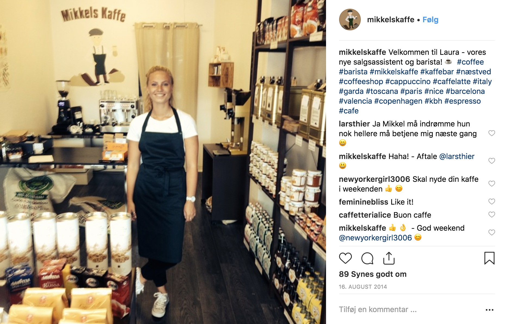
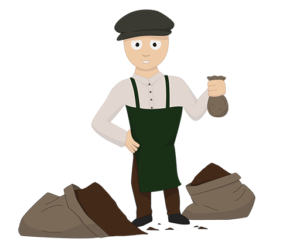

MIKKELS KAFFE
KAFFEBUTIK I NÆSTVED CENTRUM
Om Mikkels Kaffe
Da jeg var 18-år, åbnede jeg min egen kaffebutik, fordi jeg ikke gad at være i elev efter mit afsluttede HG-grundforløb. Jeg havde ellers fået elevplads, men jeg ville gerne udfordre mig selv. Jeg havde de tidligere år også haft et tøjfirma, hvor min bror og jeg designede vores egen snapback.
Jeg hævede børneopsparingen og fandt et fedt lokale i Næstved Centrum, som jeg kunne få lov at leje. Her efter var det bare at gå i gang.
De første par måneder var der ikke så meget fra butikken, men i takt med at omsætningen steg, fik jeg også et større udvalg. Jeg begyndte også at lave coffee-to-go, selvom det egentlig ikke var det, som jeg ville. Mange kunder efterspurgte det, og derfor lavede jeg det også.
Her ses et billede fra butikken, hvor en af mine studentermedhjælpere havde første arbejdsdag:
Mit logo så sådan ud:
I takt med at jeg fik flere og flere ordre på Mikkelskaffe.dk, blev jeg grebet af den online markedsføring, og derfor steg interesse her langsomt, og den forsvandt lidt for at stå i butikken. Det kulminerede, da jeg tog et kursus til online marketing manager hos Bigum & Co. Kort efter søgte jeg en stilling hos Vestjysk Marketing som Junior Online Marketing Konsulent, som jeg fik.
Derfor lukkede jeg butikken, rykkede teltpælene op og tog til Ringkøbing.
Hvad lærte jeg?
Under mit arbejde i Mikkels Kaffe lærte jeg vanvittigt meget. Jeg beskæftigede mig med alt lige fra indkøb til salg og marketing. Det var mig der havde ansvaret for alt, og jeg skulle samtidig videreudvikle konceptet. En oplevelse og en erfaring som jeg bestemt ikke ville have været foruden!